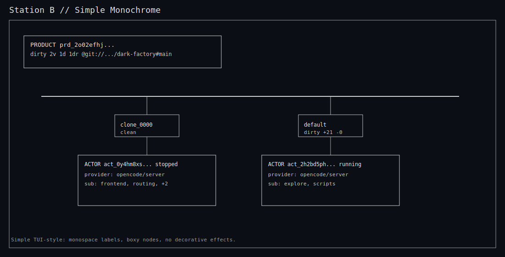
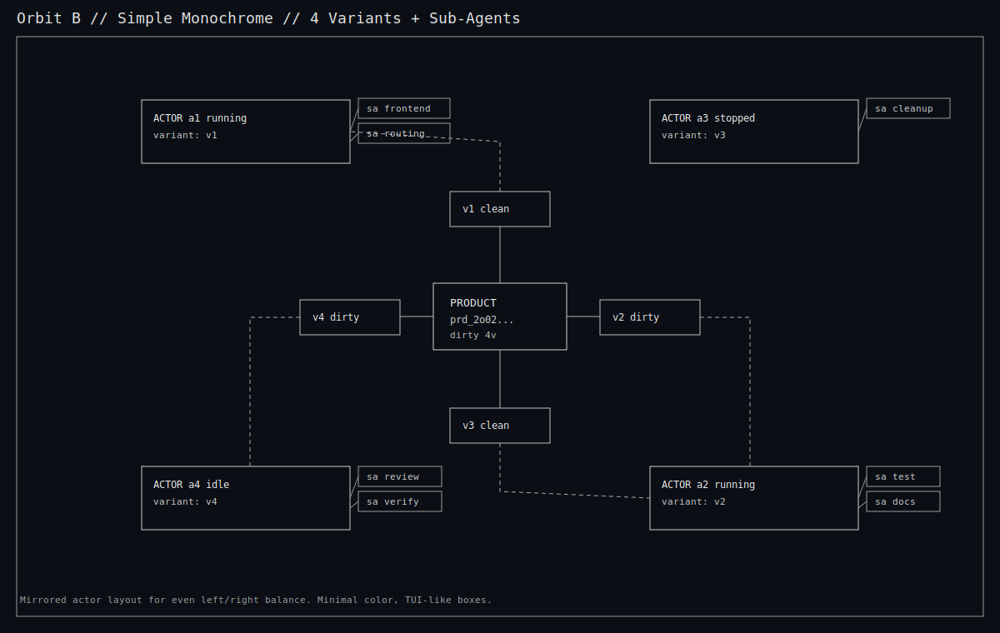

+-------------------------------------------------------------+ | Dark Factory // Graph Node // Round 6 | | | | Goal: simple SVG mocks for TUI planning | | - boxy nodes | | - monochrome / minimal color | | - no decorative styling | +-------------------------------------------------------------+
Station B (simple SVG)
Orbit B (simple SVG, 4 variants + sub-agents, mirrored)
Ref files: docs/reports/graph-node-round6-station-b-simple.svg, docs/reports/graph-node-round6-orbit-b-simple.svg